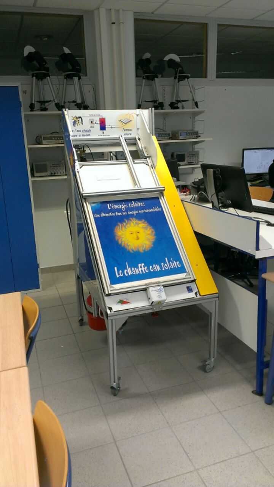
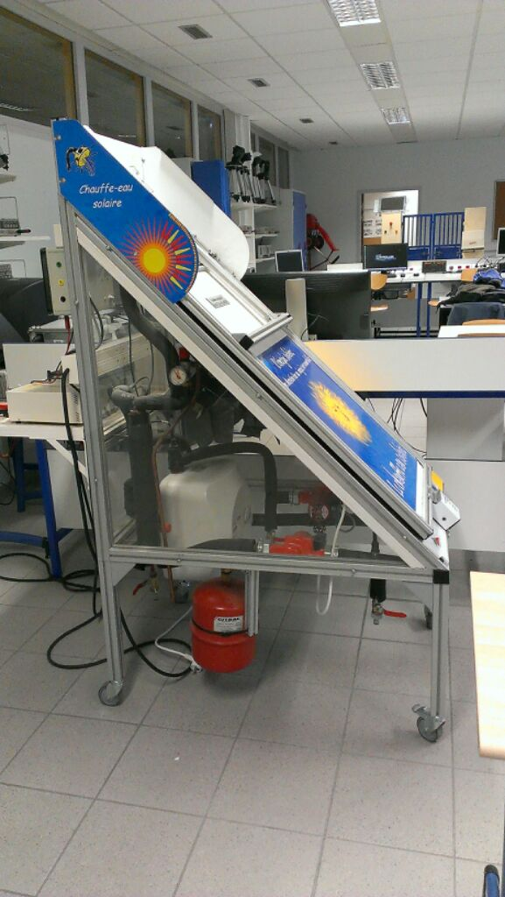
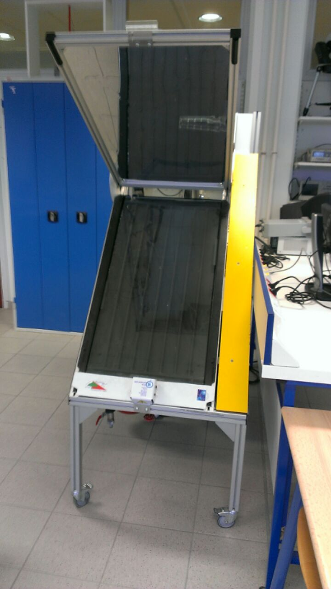

Specifications
A person has a solar boiler installed at the bottom of his garden. The local unit is located 100 meters from the main house. To increase the life of the reflector, he wishes to implement on the system a weathercock and an anemometer to activate an alarm in case of strong winds that could damage the reflector. In case of anomaly, after the outbreak of the alarm, he wishes to control remotely the manual lowering of the reflector.
IF the reflector is open,
IF the wind is strong and
IF the wind come from the south
ALERT the user : there is a danger !
IF the user want to close the reflector
Close it !